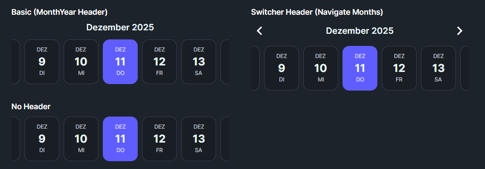

DaisyDateTimeline is a horizontal scrollable date picker inspired by FadyFayezYounan's easy_date_timeline package. It displays dates in a horizontal strip where each date appears as a card showing the day name, day number, and month. Perfect for booking systems, scheduling apps, calendars, and any UI requiring date selection from a visible range.
* Available in DaisyUI v1.2.1 and later.
Key Features:- Horizontal scrolling date strip with 5 size options
- 3 header types: None, MonthYear, Switcher (with navigation arrows)
- 6 disable strategies for restricting date selection
- Today highlighting with customizable appearance
- Auto-scroll to selected date (center or first)
- Full locale support for internationalization
- Configurable display elements (day name, number, month)
| HeaderType | Description |
|---|---|
| None | No header displayed above the timeline |
| MonthYear | Simple text header showing "December 2024" format based on selected date |
| Switcher | Header with left/right chevron arrows to navigate between months |
Control which dates users can select:
| DisableStrategy | Description |
|---|---|
| None | All dates are selectable (default) |
| BeforeToday | Dates before today are grayed out and unselectable |
| AfterToday | Dates after today are grayed out and unselectable |
| BeforeDate | Dates before DisableBeforeDate property value are disabled |
| AfterDate | Dates after DisableAfterDate property value are disabled |
| All | All dates are disabled (read-only mode) |
Control how the timeline scrolls when a date is selected:
| SelectionMode | Description |
|---|---|
| None | No automatic scrolling after selection |
| AlwaysFirst | Selected date scrolls to the left edge (first visible position) |
| AutoCenter | Selected date scrolls to the center of the viewport (default) |
Control the orientation of date items:
| ItemLayout | Description |
|---|---|
| Vertical | Stacked layout with month on top, day number centered, day name at bottom (default, portrait-style) |
| Horizontal | Side-by-side layout showing "MON 19" format (landscape-style, wider items) |
Configure which parts of each date item are shown using the DisplayElements flags. Each item displays in the order: Month → Day Number → Day Name (top to bottom).
| DisplayElements | Shows |
|---|---|
| DayName | Three-letter day name in uppercase (MON, TUE, WED...) |
| DayNumber | Numeric day of month (1-31) |
| MonthName | Three-letter month name in uppercase (JAN, FEB, MAR...) |
| Default | All three elements (MonthName + DayNumber + DayName) |
| Compact | Day name and number only |
| NumberOnly | Just the day number |
| Size | Item Height | Use Case |
|---|---|---|
| ExtraSmall | ~56px | Compact toolbars, embedded widgets |
| Small | ~68px | Secondary pickers, limited space |
| Medium | ~80px | Default, general purpose |
| Large | ~96px | Primary date selection, emphasis |
| ExtraLarge | ~112px | Hero sections, full-width pickers |
<!-- Basic usage with defaults -->
<controls:DaisyDateTimeline />
<!-- Custom date range -->
<controls:DaisyDateTimeline
FirstDate="2024-01-01"
LastDate="2024-12-31"
SelectedDate="{Binding SelectedDate}" />
<!-- With month switcher navigation -->
<controls:DaisyDateTimeline
HeaderType="Switcher"
SelectedDate="{Binding AppointmentDate, Mode=TwoWay}" />
<!-- No header, compact mode -->
<controls:DaisyDateTimeline
HeaderType="None"
Size="Small"
DisplayElements="Compact" />
<!-- Only allow future dates -->
<controls:DaisyDateTimeline
DisableStrategy="BeforeToday"
SelectedDate="{Binding BookingDate, Mode=TwoWay}" />
<!-- Custom disable date range -->
<controls:DaisyDateTimeline
DisableStrategy="BeforeDate"
DisableBeforeDate="2024-06-01"
FirstDate="2024-05-01"
LastDate="2024-07-31" />
<!-- Different locale (German) -->
<controls:DaisyDateTimeline
Locale="{x:Static glob:CultureInfo.GetCultureInfo('de-DE')}" />
<!-- Large size for primary selection -->
<controls:DaisyDateTimeline
Size="Large"
HeaderType="Switcher" />
<!-- Day number only display -->
<controls:DaisyDateTimeline
DisplayElements="NumberOnly"
ItemWidth="48"
ItemSpacing="4" />| Property | Type | Default | Description |
|---|---|---|---|
FirstDate |
DateTime |
Today - 1 month | First date in the scrollable range |
LastDate |
DateTime |
Today + 3 months | Last date in the scrollable range |
SelectedDate |
DateTime? |
Today | Currently selected date |
ItemWidth |
double |
64 | Width of each date item in pixels |
ItemSpacing |
double |
8 | Horizontal spacing between items |
DisplayElements |
DateElementDisplay |
Default | Which date parts to display |
DisableStrategy |
DateDisableStrategy |
None | How to disable dates |
DisableBeforeDate |
DateTime? |
null | Reference date for BeforeDate strategy |
DisableAfterDate |
DateTime? |
null | Reference date for AfterDate strategy |
SelectionMode |
DateSelectionMode |
AutoCenter | How to scroll on selection |
HeaderType |
DateTimelineHeaderType |
MonthYear | Header display style |
Locale |
CultureInfo |
CurrentCulture | Culture for date formatting |
ShowTodayHighlight |
bool |
true | Whether to highlight today's date |
Size |
DaisySize |
Medium | Overall size of date items |
ItemLayout |
DateItemLayout |
Vertical | Layout orientation (Vertical or Horizontal) |
MarkedDates |
IList |
null | Collection of dates to highlight with tooltips |
ScrollBarVisibility |
ScrollBarVisibility |
Hidden | Scrollbar display mode (Hidden still allows mouse wheel/drag) |
AutoWidth |
bool |
false | Auto-calculate width to fit exactly VisibleDaysCount items |
VisibleDaysCount |
int |
7 | Number of visible days when AutoWidth is true |
Mark specific dates with a secondary color background and optional tooltip text. Marked dates stand out visually and show their tooltip on hover.
public class DateMarker
{
public DateTime Date { get; set; } // The date to mark
public string Text { get; set; } // Tooltip text (optional)
}// In code-behind or ViewModel
myTimeline.MarkedDates = new List<DateMarker>
{
new DateMarker(DateTime.Today.AddDays(2), "Team Meeting"),
new DateMarker(DateTime.Today.AddDays(5), "Project Deadline"),
new DateMarker(DateTime.Today.AddDays(10), "Vacation Day")
};Marked dates display with a secondary color background (instead of the default neutral). When the user hovers over a marked date, the tooltip text appears.
| Event | Trigger | Description |
|---|---|---|
DateChanged |
Selection changes | Fires when SelectedDate changes from any source (click, keyboard, code). Provides DateTime. |
DateClicked |
Mouse click | Fires when a date is clicked with the mouse. Provides the clicked DateTime. |
DateConfirmed |
Enter/Space key | Fires when Enter or Space is pressed on the selected date (confirmation action). |
EscapePressed |
Escape key | Fires when Escape is pressed. Default behavior: scrolls to today if in range. |
| Method | Description |
|---|---|
GoToDate(DateTime) |
Scrolls to and selects the specified date if within range |
GoToToday() |
Scrolls to and selects today's date if within range |
Read-only properties for convenient date string formatting (uses the control's Locale setting):
| Property | Example Output | Format |
|---|---|---|
SelectedDateLong |
"Wednesday, December 11, 2025" | Long date (D) |
SelectedDateShort |
"12/11/2025" | Short date (d) |
SelectedDateIso |
"2025-12-11" | ISO 8601 |
SelectedDateMonthDay |
"December 11" | Month and day |
The control is fully keyboard accessible. Click on the timeline or tab to it to enable keyboard navigation:
| Key | Action |
|---|---|
| ← (Left) | Move to previous day |
| → (Right) | Move to next day |
| ↑ (Up) | Move to previous week (7 days back) |
| ↓ (Down) | Move to next week (7 days forward) |
| Home | Jump to first available date in range |
| End | Jump to last available date in range |
| Page Up | Move to previous month |
| Page Down | Move to next month |
| Enter/Space | Confirm selection (fires DateConfirmed event) |
| Escape | Scroll to today if in range (fires EscapePressed event) |
> Note: Navigation automatically skips disabled dates.
| Interaction | Action |
|---|---|
| Mouse Wheel | Scroll horizontally through dates |
| Click + Drag | Pan left/right through dates (grab-and-drag) |
| Click on Date | Select that date |
Each date item can display the following visual states:
| State | Appearance |
|---|---|
| Normal | Base200 background, subtle border |
| Hover | Slightly elevated with Base300 background |
| Today | Primary-colored border (when not selected) |
| Selected | Primary background with contrasting text |
| Disabled | 40% opacity, no hover effect, non-interactive |
1. Set reasonable date ranges: Avoid extremely large ranges (years) as each date creates a control instance. Stick to weeks or months.
2. Use DisableStrategy for validation: Rather than filtering dates in your ViewModel, use the built-in strategies for better performance.
3. Combine with DaisyCard: Wrap the timeline in a card for a polished booking widget:
<controls:DaisyCard>
<StackPanel Spacing="12">
<TextBlock Text="Select Date" FontWeight="SemiBold" />
<controls:DaisyDateTimeline HeaderType="Switcher" />
</StackPanel>
</controls:DaisyCard>4. Locale support: For international apps, bind Locale to a user preference:
<controls:DaisyDateTimeline Locale="{Binding UserCulture}" />5. Adjust ItemWidth for content: If showing only day numbers (NumberOnly), reduce ItemWidth to ~48px for a more compact appearance.